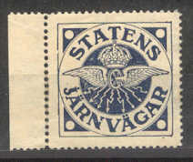

Return To Catalogue - Denmark railway stamps - Norway - Sweden - Finland Railway and Ferry stamps
Note: on my website many of the
pictures can not be seen! They are of course present in the
catalogue;
contact me if you want to purchase it.
I don't have much information concerning these stamps, if anybody posesses more information, please contact me!
I've seen the 2 Sk blue and 4 Sk red stamps in this design.

I've seen the values, 10 o brown, 60 o brown, 90 o green, 200 o violet, "25 ore" on 10 o brown and "100 ore" on 40 o orange.
I have seen the values 5 o grey, 7 o red, 10 o brown, 20 o brown, 30 o green, 40 o grey, 40 o yellow, 50 o yellow, 50 o brown, 50 o red, 60 o red, 70 o brown, 80 o violet, 90 o red, 90 o violet, 100 o orange, 100 o blue, 120 o yellow, 200 o green and a surchrarge of '10' on 7 o red. I have also seen a 500 o lilac (design slightly different with value in an ellipse). In a similar design but larger (value in an ellipse) I have seen 25 o green.
(Reduced sizes)


NordJyllands Forenede Privatbaner in a very similar design as the
Aalborg stamps.

The earliest Danish railway stamps I know of (The Stamp Collector's Magazine Vol IV, 1866, page 89) are issued in 1866 with inscription "DE SJAELLANDSKE JERNBANER" in the values 8 sk blue (5 Pund) and 16 (12?) sk brown (10 Pund). See also http://a34.dk/banem/regional/dsj/dsj.html (site no longer active). In 1875 a 20 ore blue (10 Pund) was issued in the same design.


10 Pund 12 Skilling brown value in an ellipse, crown on top. Also
a 5 Pund 8 Skilling blue.
For more Denmark railway stamp, click here.